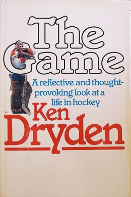

This article needs additional citations for verification. Please help improve this article by adding citations to reliable sources. Unsourced material may be challenged and removed.
Find sources: "The Game" Dryden book – news · newspapers · books · scholar · JSTOR (December 2009) (Learn how and when to remove this template message)
Description
The Game is a book written by former ice hockey goaltender Ken Dryden. Published in 1983, the book is a non-fiction account of the 1978-79 Montreal Canadiens, detailing the life of a professional hockey player. The book describes the pressures of being a goaltender in the NHL, and gives readers a behind-the-scenes look at a team that would eventually win the 1979 Stanley Cup. Dryden writes about the life of an athlete, coping with the demands of a demanding sport and reconciling these pressures with life outside the arena.
Reception
Ken Dryden's book The Game received praise from critics upon its publication. Mordecai Richler wrote "Dryden has written a very special book, possibly the best hockey book I have ever read. His affectionate yet realistic portrait of the players is unrivalled in hockey writing."[1] Wrote noted sports columnist Scott Young: "A hockey book so rare that there is actually nothing to compare it to."[1] The Game was nominated for a Governor General's Literary Award for Non-fiction in 1983 [2]Since its publication its stature has continued. Sports Illustrated named it in 2002 as the ninth best sports book of all time: "Hall of Fame goalie Dryden was always different. A Cornell grad, he led Montreal to six Stanley Cups, then at 26 sat out a year to prepare for the bar exam. His book is different too: a well-crafted account of his career combined with a meditation on hockey's special place in Canadian culture."[3] Ian McGillis in the Montreal Gazette wrote "It's a book that made a huge splash on first publication in 1983 and has weathered the subsequent decades remarkably well, staying in print and picking up new readers far past the point where a book tied to a specific hockey season – 1978-79 – might be expected to. Its stature owes something to how clearly it stands out among sports books, but to call it the best hockey book ever, as it certainly is, still sounds faintly condescending. It’s a Canadian classic, period.

Author : Ken Dryden
Country : Canada
Language : English
Genre : Non-fiction,memoir
Publisher : Macmillan of Canada
Publication date: 1983
Media type : Print
Preceded by Face-Off at the Summit
Followed by Home Game